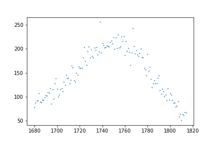

curve_fit
The parameters that curve_fit works from are given by the official documentation as: f, xdata, ydata, p0, sigma, absolute_sigma, check_finite, bounds, method, jac, full_output, nan_policy, and **kwargs. Only the first three parameters are required: f, xdata, and ydata, but including the fourth, p0, is often essential for guiding the fit, especially when the function is nonlinear or has multiple parameters. p0 defaults to all ones if not specified, but this often fails for more complex models.
Only these four will be covered here, but feel free to explore the documentation provided if you wish to use everything that curve_fit has to offer.
In curve_fit, f is our model function. This requires the creation of another function which will be called in curve_fit. It is necessary that the first argument that the function f takes is the independent variable, which is the x-axis in the case of our data. The other parameters of this function will be the remaining unknown variables of the equation.
xdata, and ydata are exactly what they sound like: the x and y data that you're fitting to the model function.
p0 is the initial guess for the unknown variables/parameters of the model function. It is given as an array where every guess is listed in the order that their associated parameters are listed in the function definition (i.e. if the function f is: def function(x, a, b), p0 would include [a_estimate, b_estimate]).
Let's get started on creating our model function.
The Gaussian
The Gaussian (or Normal) Distribution is a common equation that you'll run into in statistical mechanics. It describes a symmetric, bell-shaped curve centered at a mean value, \(\mu\) (mu), with its width determined by the standard deviation, \(\sigma\) (sigma), and its offset above the x-axis given by D (called the y-offset). It has the form:
In gamma spectroscopy, we are using the Gaussian as a model for how our detected energy counts are spread around the central photopeak. Variations in the emission and detection of our photons have caused the recorded values to "smear" into a normal distribution, with the most common value being the center of the curve. Fitting our data to this curve then allows us to extract the value for the central energy, \(\mu\), as well as its margin of error/standard deviation, \(\sigma\).
In our equation, the first term (\(\frac{1}{\sqrt{2\pi \sigma^2}}\)) is called the normalization constant. Its purpose is to set the value of the integral of a Gaussian curve to be equal to 1, meaning 100% of the data fits under the curve, but this term can actually be dropped for our purposes. We can thus set our equation to be equal to:
In this equation:
-
A controls the height/amplitude of the peak
-
\(\mu\) is the mean value in the center (the energy of the photon)
-
\(\sigma\) relates to the standard deviation of the line
-
D is the y-offset.
\(\sigma\) is one of the more difficult of these variables to estimate unless you are already at least somewhat familiar with the Gaussian distribution. One \(\sigma\) can be estimated as a distance from the central \(\mu\) value which includes just over one third of the total area under the curve. Keeping the following visual in mind can be very helpful for trying to estimate \(\sigma\):

[Image from https://tikz.net/gaussians/]
Let's create a gaussian function which simply returns our equation \(f(x)\):
def gaussian(x, amplitude, mu, sigma, y_offset):
return amplitude * np.exp(-((x-mu)**2) / (2 * sigma**2)) + y_offset
Additionally, our data will include some peaks which are so close to each other that they actually overlap. Overlapping peaks are common when two gamma emissions have close energies. This can be modelled using the equation:
Where n is given by the number of overlapping peaks. Luckily, our data shouldn't include more than two overlapping peaks, so we only need to create a function to find the parameters of a double gaussian:
def double_gaussian(x, amp_1, mu_1, sigma_1, amp_2, mu_2, sigma_2, y_offset):
return (
amp_1 * np.exp(-((x-mu_1)**2) / (2 * sigma_1)**2)
+ (amp_2 * np.exp(-((x-mu_2)**2) / (2 * sigma_2)**2))
+ y_offset
)
For reference (if you're interested in attempting to find all of the peak fits before continuing to the next section), here is a table with the provided isotopes and the known emission energies of their most prominent photopeaks:
| Isotope | Energy (keV) |
|---|---|
| Na-22 | 511, 1274.54 |
| Mn-54 | 834.84 |
| Co-57 | 122.06 |
| Co-60 | 1173.23, 1332.49 |
| Cd-109 | 88.03 |
| Ba-133 | 81, 276.4, 302.85, 356.01, 383.85 |
Using curve_fit
Now we can finally use curve_fit to start extracting values from our data. curve_fit can return five different values, popt, pcov, infodict, mesg, and ier, but only the first two are valuable for our purposes. popt is a one dimensional array containing estimates for the optimal parameter values, while pcov contains a 2-D array with estimates for the covariance of popt. For the values of the optimal parameter's uncertainties, only the square roots of the diagonal values of pcov are needed - each entry shows the relationship between each variable with the diagonal values being the relationships of each variable with itself.
Let's create a function for each of our gaussian functions which will return the relevant values of popt and pcov. The only difference between these functions will be which equation they call as the model functions:
def find_gaussian_values(xdata, ydata, p0):
return curve_fit(gaussian, xdata, ydata, p0=p0)
def find_dgaussian_values(xdata, ydata, p0):
return curve_fit(double_gaussian, xdata, ydata, p0=p0)
Next, let's create a function which will take our popt and pcov arrays and use them to create a plot of our data against the line of best fit. It will be able to take an element name and our emission value in order to title each plot. We can also make it capable of plotting either a gaussian or a double gaussian with a simple True/False flag, and then use an if/else tree to differentiate between the two. It will also print out the found parameters and their uncertainties, as well as return our \(\mu\) values and their uncertainties so they can be assigned to variables and used later:
def plot_best_fit(element, emission_peak, xdata, ydata, popt, pcov, d_gaussian=False):
uncertainties = np.sqrt(np.diag(pcov))
# Create labels for printing results
if not d_gaussian:
labels = ['Amplitude', 'Mean', 'Sigma', 'Y-offset']
else:
labels = ['Amplitude 1', 'Mean 1', 'Sigma 1',
'Amplitude 2', 'Mean 2', 'Sigma 2',
'Y-offset']
if not d_gaussian:
mu = popt[1]
mu_uncertainty = uncertainties[1]
else:
mu_1, mu_2 = popt[1], popt[4]
mu_1_uncertainty, mu_2_uncertainty = uncertainties[1], uncertainties[4]
# Plot raw data of peak
plt.scatter(xdata, ydata, label='Data', marker='.', color='blue')
# Plot line of best fit and draw a vertical line through mu value
if not d_gaussian:
plt.plot(xdata, gaussian(xdata, *popt), label='Best fit', color='red')
plt.axvline(mu, color='green', linestyle='-.', label=f'$\mu: {mu:.2f}\pm{mu_uncertainty:.2f}$')
else:
plt.plot(xdata, double_gaussian(xdata, *popt), label='Best fit', color='red')
plt.axvline(mu_1, color='green', linestyle='-.', label=f'$\mu_1: {mu_1:.2f}\pm{mu_1_uncertainty:.2f}$')
plt.axvline(mu_2, color='black', linestyle='-.', label=f'$\mu_2: {mu_2:.2f}\pm{mu_2_uncertainty:.2f}$')
# Title plot, show legend, and label axes
plt.title(f'{element}: {emission_peak} Peak')
plt.xlabel('Channel')
plt.ylabel('Counts')
plt.legend()
plt.show()
# Print and return results
print('Best fit parameters:')
for name, val, err in zip(labels, popt, uncertainties):
print(f'{name}: {val:.2f} +/- {err:.2f}')
if not d_gaussian:
return mu, mu_uncertainty
else:
return mu_1, mu_1_uncertainty, mu_2, mu_2_uncertainty
With these functions, we can now run our first curve_fit after estimating the amplitude, center channel of the peak, the uncertainty, and the y-offset. Let's take a look again at our first isolated curve:

To estimate the amplitude, we can subtract a rough estimate of where the bottom of the curve lies on the y-axis from where the top of the curve lies. To estimate the mean channel number, we can simply eyeball where the center of the curve lies. To estimate the standard deviation, we can recall the image from before, and to estimate the y-offset we can view where the bottom of the curve lies on the y-axis once again. Let's go with: [175, 1750, 20, 50] for these values.
p0=[175, 1750, 20, 50]
Co_60P1_popt, Co_60P1_pcov = find_gaussian_values(
co_peak_one.iloc[:,0].values,
co_peak_one.iloc[:,1].values,
p0
)
Co_60P1_mu, Co_60P1_mu_uncert = plot_best_fit(
'Co-60', '1.175 MeV',
co_peak_one.iloc[:,0].values, co_peak_one.iloc[:,1].values,
Co_60P1_popt, Co_60P1_pcov
)
Output:

Best fit parameters:
Amplitude: 160.75 +/- 8.62
Mean: 1747.79 +/- 0.57
Sigma: 33.09 +/- 2.04
Y-offset: 54.67 +/- 9.43
And we can repeat our steps to estimate the values of our second peak:
p0=[150, 1940, 30, 25]
Co_60P2_popt, Co_60P2_pcov = find_gaussian_values(
co_peak_two.iloc[:,0].values,
co_peak_two.iloc[:,1].values,
p0
)
Co_60P2_mu, Co_60P2_mu_uncert = plot_best_fit(
'Co-60', '1.333 MeV',
co_peak_two.iloc[:,0].values, co_peak_two.iloc[:,1].values,
Co_60P2_popt, Co_60P2_pcov
)
Output:

Best fit parameters:
Amplitude: 156.96 +/- 3.83
Mean: 1939.07 +/- 0.43
Sigma: 39.02 +/- 1.22
Y-offset: 9.62 +/- 4.18
Awesome! You've completed your first set of curve_fits and have found the numbers which we can later associate with the radiation energies. This process has also resulted in us setting the variables Co_60P1_mu, Co_60P1_mu_uncert, Co_60P2_mu, and Co_60P2_mu_uncert.
In order to make our work easier later, let's create a new cell at the bottom of our notebook which we'll use to keep a dictionary of all of our elements, their calculated channel numbers and uncertainties, and their associated emission energies (in keV):
value_bank = {
('Co-60', Co_60P1_mu, Co_60P1_mu_uncert, 1175),
('Co-60', Co_60P2_mu, Co_60P2_mu_uncert, 1333),
}
This is where you'll store variables for each of the remaining files emission peaks, which will be used in the next section.
After we have performed this process for the remaining files, we'll have successfully extracted the mean channel numbers (\(\mu\)) for every detected emission peak. From there, we can begin the process of fitting our data to a straight line. Click here to continue to the next section where we will look at how to plot all of our data as well as label it and include our margins of error.